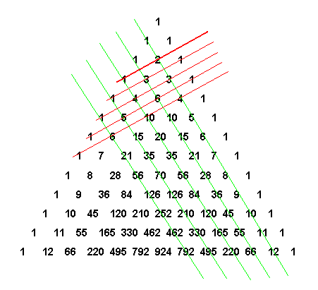

Основные формулы комбинаторики
1)
Факториал (произведение всех натуральных чисел от 1 до n включительно):
1!= 1
2!= 1*2=2
3!=1*2*3=6
4!= 1*2*3*4=24
5!= 1*2*3*4*5=120
6!= 1*2*3*4*5*6=720
7!= 1*2*3*4*5*6*7=5040
8!= 1*2*3*4*5*6*7*8=40320
9!= 1*2*3*4*5*6*7*8*9=362880
....
(n - 1)!= 1*2*3*4*5 ... * (n - 2)(n - 1)
n!= 1*2*3*4*5 ...* (n - 2)(n - 1)n
(n + 1)!= 1*2*3*4*5 ...* (n - 2)(n - 1)n(n - 1)
Кроме того 0!=1
2)Перестановки, сочетания и размещения без повторений
Участники действий : множество, состоящее из n различных объектов (либо объектов, считающихся в контексте той или иной задачи различными )
| Формула количества перестановок:$$P_{n}=n!$$ Типичная смысловая нагрузка: «Сколькими способами можно переставить n объектов?» |
| Формула количества сочетаний: $$C_{n}^{m}=\frac{n!}{(n-m)!*m!}$$ Типичная смысловая нагрузка: «Сколькими способами можно выбрать m объектов из n ?». Поскольку выборка проводится из множества, состоящего из n объектов, то справедливо неравенство 0⩽m⩽n |
| Формула количества размещениий: $$A_{m}^{n}= (n-m+1)*...*(n-1)$$
Типичная смысловая нагрузка: «Cколькими способами можно выбрать m объектов (из n объектов) и в каждой выборке переставить их местами (либо распределить между ними какие-нибудь уникальные атрибуты)» Исходя из вышесказанного, справедлива следующая формула: $$C_{m}^{n}*P_{m}=A_{m}^{n}$$ И в самом деле: $$C_{m}^{n}*P_{m}=\frac{n!}{(n-m)!*m!}*m!=\frac{n!}{(n-m)!}=$$ $$=\frac{1*2*3...(n-m)(n-m+1)*...*(n-1)n}{1*2*3...(n-m)}=$$ $$=(n-m+1)*...*(n-1)*n=A_{n}^{m}$$ |
3) Бином Ньютона и треугольник Паскаля
Под биномом Ньютона чаще всего подразумевают формулу возведения двучленa (a+b) (b неотрицательную степень n :
$$(a+b)^{0}=1$$
$$(a+b)^{1}=C_{1}^{0}a+C_{1}^{1}b$$
$$(a+b)^{2}=C_{2}^{0}a^{2}+C_{2}^{1}ab+C_{2}^{2}b^{2}=a^{2}+2ab+b^{2}$$
$$(a+b)^{3}=C_{3}^{0}a^{3}+C_{3}^{1}a^{2}b+C_{3}^{2}b^{2}a+C_{3}^{3}b^{3}=a^{3}+3a^{2}b+3ab^{2}+b^{3}$$
...$$(a+b)^{n}=C_{n}^{0}a^{n}+C_{n}^{1}a^{n-1}b+C_{n}^{2}a^{n-2}b^{2}+C_{n}^{n-2}a^{2}b^{n-2}+C_{n}^{n-1}ab^{n-1}+C_{n}^{n}b^{n}$$
...Биномиальные коэффициенты \(C_{m}^{n}\) можно рассчитать по стандартной формуле (см. пункт 2), но удобнее воспользоваться так называемым треугольником Паскаля , который представляет собой бесконечную таблицу биномиальных коэффициентов. По бокам этого треугольника расположены единицы, а каждое внутреннее число равно сумме двух ближайших верхних чисел :
Так, например, для возведения двучлена в 4-ю степень следует руководствоваться общей формулой бинома, после чего сразу записать числа из строки № 4 треугольника Паскаля:$$(a+b)^{4}=C_{0}^{4}a^{4}+C_{4}^{1}a^{3}b+C_{4}^{2}a^{2}b^{2}+C_{4}^{3}b^{3}a+C_{4}^{4}b^{4}=a^{4}+4a^{3}b+6a^{2}b^{2}+4ab^{3}+b^{4}$$
Кроме того, данная таблица позволяет быстро находить отдельно взятые биномиальные коэффициенты (например, в целях проверки вычислений по формуле $$C_{n}^{m}=\frac{n!}{(n-m)!*m!}$$
\(C_{2}^{6}\) – находим строку № 6 и (внимание!) 2 + 1 = 3-й элемент слева:\(C_{2}^{6}\)=15
\(C_{5}^{9}\) – находим строку № 9 и выбираем 5 + 1 = 6-й элемент слева:\(C_{5}^{9}\)=126
\(C_{3}^{10}\) – находим строку № 10 и выбираем 3 + 1 = 4-й элемент слева:\(C_{3}^{10}\)=120
4) Комбинаторное правило суммы и комбинаторное правило произведения
Если объект A можно выбрать из некоторого множества объектов m способами, а другой объект B – n способами, то выбор объекта A или объекта B (без разницы какого) возможен mn способами.
Если объект A можно выбрать из некоторого множества объектов m способами и после каждого такого выбора объект B можно выбрать n способами, то упорядоченная пара объектов (A;B) может быть выбрана mn способами.
Данные принципы справедливы и для бОльшего количества объектов.
Важная содержательная часть правил состоит в том, знак «плюс» понимается и читается как союз ИЛИ , а знак «умножить» – как союз И .
5) Перестановки, сочетания и размещения с повторениями
Участники действий: множество, состоящее из объектов, среди которых есть одинаковые (либо считающиеся таковыми по смыслу задачи)
|
Формула количества перестановок с повторениями:$$P_{n(повт)}=\frac{n!}{n_{1}!*n_{2}!*n_{3}!*...*n_{k}!}$$ где \(n_{1}\)+\(n_{2}\)+\(n_{3}\)+...+\(n_{k}\) |
|
Формула количества сочетаний с повторениями:$$C_{(повт)n}^{m}=C_{n+m-1}^{m}=\frac{(n+m-1)!}{(n-1)!*m!}$$ Типичная смысловая нагрузка: «Для выбора предложено n множеств, каждое
из которых состоит из одинаковых объектов. Сколькими способами можно выбрать m объектов?» |
|
Формула количества размещений с повторениями:$$A_{n(повт)}^{m}=n^{m}$$Типичная смысловая нагрузка: «Дано множество, состоящее из n объектов, при этом любой объект можно выбирать
неоднократно . Сколькими способами можно выбрать m объектов, если важен порядок их расположения в выборке? » |